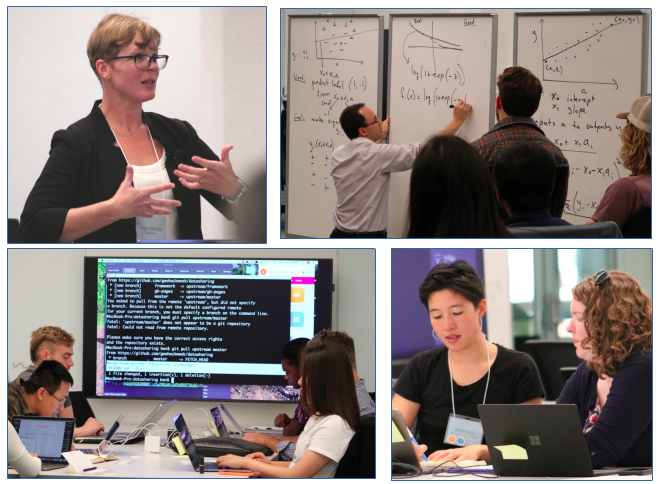

Tutorial Leads
Contents
Tutorial Leads¶
Our work in designing and delivering tutorial content is informed by our overall mission. We strive to create a sense of belonging by meeting participants where they are and embracing the idea that each of us is on a lifelong journey of learning.
For more information on deepening your skills and awareness as a data science instructor please visit the Software Carpentry Instructor Training page.
Time Commitment¶
We will work with you to build a tutorial design team in the months preceding your event. This usually involves a series of 8 to 10 one hour biweekly planning calls where we will work with you to get clear on learning outcomes, tutorial design and the technical aspects of tutorial building. This is in addition to any time you spend during the hackweek to teach material.
What can I expect to gain from this experience?¶
Hackweeks have traditionally been very dynamic events at which knowledge is exchanged in multiple directions across different levels of career position and backgrounds. We hope you will have an opportunity to learn a lot of new things by engaging in this experience. Past tutorial leads have used these events to gain teaching experience and as a way to round out their teaching profile. Like other participants you can also expect to build new contacts in the community, recruit students and generate new project ideas.
Additional Resources¶
Ready to become a tutorial lead? Next we provide a detailed list of resources to guide you through the process!
{kind=link}